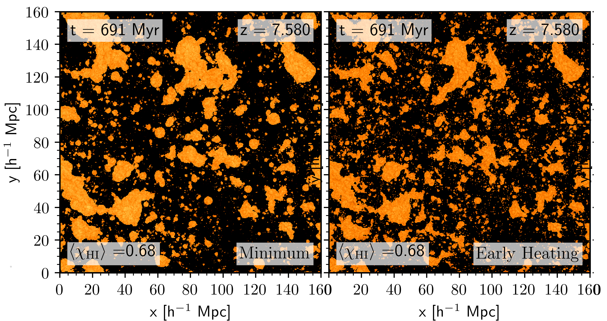

ASTRAEUS framework - a fast and self-consistent model for early galaxy evolution and reionisation
ASTRAEUS couples a semi-analytic galaxy evolution model with a semi-numerical reionisation code and runs on the outputs of high-resolution, large-volume dark matter simulations. It follows the essential physical processes governing early galaxy evolution and reionisation by post-processing a dark matter only simulation’s mass assembly histories of dark matter halos and the evolving spatial distribution of the matter density. For each simulated galaxy and at each time, it tracks the amount of gas accreted, the gas and stellar mass merged, the formation of stars and their feedback through supernovae and metal enrichment. It also follows the large-scale reionisation process, tracking the time and spatial evolution of the ionised regions within the intergalactic gas, and its feedback on the gas content in galaxies.
Publications
The impact of an evolving stellar initial mass function on early galaxies and reionisation
(Cueto, Hutter, Dayal, Gottlöber, Heintz, Mason, Trebitsch, Yepes, 2024)
Observations with JWST have revealed an unexpected high abundance of bright z>10 galaxy candidates. We explore whether a stellar initial mass function (IMF) that becomes increasingly top-heavy towards higher redshifts and lower gas-phase metallicities results in a higher abundance of bright objects in the early universe and how it affects the evolution of galaxy properties compared to a constant IMF. We incorporate such an evolving IMF into the ASTRAEUS framework that couples galaxy evolution and reionisation in the first billion years. Our implementation accounts for the IMF dependence of supernova feedback, metal enrichment, ionising and ultraviolet radiation emission. We conduct two simulations: one with a Salpeter IMF and one with the evolving IMF. Our results suggest that a top-heavier IMF alone is unlikely to explain the higher abundance of bright z>10 sources, since the lower mass-to-light ratio is counteracted by the stronger stellar feedback.
On the general nature of 21cm-Lyman-alpha emitter cross-correlations during reionization
(Hutter, Heneka, Dayal, Gottlöber, Mesinger, Trebitsch, Yepes, 2023)
We examine how the cross-correlation functions between 21-cm emission from neutral hydrogen and Lyman-alpha radiation-emitting galaxies (Lyman-alpha emitters) depend on the reionisation history, topology, and simulated volume. We develop an analytic expression for the 21cm-LAE cross-correlation function and compare it with results from ASTRAEUS and 21cmFAST reionisation simulations covering a physically plausible range of scenarios where either the low-mass or more massive galaxies drive reionisation. Our results show that the small-scale cross-correlation amplitude depends on the intergalactic medium's average neutral hydrogen fraction and spin-temperature weighted overdensity in neutral regions, while the cross-correlation function's inversion point traces the peak of the size distribution of ionised regions around Lyman-alpha emitters. This makes 21cm-LAE cross-correlations sensitive to both the reionisation history and topology.
Astraeus VIII: A new framework for Lyman-alpha emitters applied to different reionisation scenarios
(Hutter, Trebitsch, Dayal, Gottlöber, Yepes, Legrand, 2023)
We extend the ASTRAEUS simulations by a new model for Lyman-alpha emitters for the two physically plausible bracketing scenarios of the escape fraction of ionising photons increasing and decreasing with rising halo mass. Our new model parameterises results from numerical Lyman-alpha radiative transfer simulations and introduces novel analytic Lyman-alpha line profile models that describe the surrounding interstellar medium as outflowing dusty gas clumps, with one of them relating the escape fraction of Lyman-alpha photons to that of ionising photons. We find that during reionisation Lyman-alpha emitters are relatively massive galaxies residing in overdense and highly ionised regions. For this reason, their spatial distribution is primarily sensitive to the global ionisation fraction and only eakly to the ionisation topology or a halo mass dependent escape fraction of ionising photons.
Astraeus VII: The environmental-dependent assembly of galaxies in the Epoch of Reionization
(Legrand, Dayal, Hutter, Gottlöber, Yepes, Trebitsch, 2023)
We explore how environmental density and radiative feedback affect the assemly of galaxies and halos during reionisation. Our analysis reveals that there is a mass- and redshift-dependent characteristic environment where galaxies are most efficient at accreting matter; the number of mergers increases with halo mass at all redshifts; minor mergers slightly dominate dark matter assembly, while major mergers dominate stellar assembly at z = 5; and radiative feedbakc being more efficient in suppressing star formation in low-mass galaxies in over-dense environments.
Astraeus VI: Hierarchical assembly of AGN and their large-scale effect during the Epoch of Reionization
(Trebitsch, Hutter, Dayal, Gottlöber, Legrand, Yepes, 2023)
We extend Astraeus by a model for black-hole formation, growth, and the production of ionizing radiation from associated active galactic nuclei (AGNs). With this updated framework, we explore the role of AGN in reionising the Universe for models reproducing the bolometric luminosity function at z = 5. All the models yielding a reasonable AGN luminosity function, galaxies dominate overwhelmingly the ionising budget during the Epoch of Reionization, with AGN accounting for 1-10 per cent of the ionizing budget at z = 6 and starting to play a role only below z ≲ 5.
Astraeus V: the emergence and evolution of metallicity scaling relations during the epoch of reionization
(Ucci, Dayal, Hutter, Kobayashi, Gottlöber, Yepes, Hunt, Legrand, Tortora, 2023)
We implement a detailed physical model for metal enrichment into Astraeus. Our updated framework shows that the mass-metallicity relation is already in place at z~10 and shows effectively no redshift evolution down to z~5, whereas, for a given stellar mass, the metallicity decreases with an increase in the star formation rate. Overall we can identify a high-redshift fundamental plane of metallicity that links gas-phase metallicity, stellar mass, star formation rate and redshift.
Astraeus IV: quantifying the star formation histories of galaxies in the Epoch of Reionization
(Legrand, Hutter, Dayal, Ucci, Gottlöber, Yepes, 2022
In this paper we analyse the star formation histories of Astraeus simulations assuming different radiative feedback from reionisation models. In particular, we investigate which galaxies show stochastic star formation (it is the lower mass galaxies where star formation is stellar feedback limited) and how much stellar mass is accumulated in this stochastic star formation phase (fewer the more massive the galaxy).
Astraeus III: The environment and physical properties of reionization sources
(Hutter, Dayal, Legrand, Gottlöber, Yepes, 2021)

We use the ASTRAEUS simulations to investigate how strongly the galaxy populations driving reionization are determined by the nature of radiative feedback from reionization and the escape fraction of ionizing photons from galaxies. We focus on two key quantities describing galaxy populations, the galaxies' gravitational potentials and their environment/location in the cosmic web.
Astraeus II: Quantifying the impact of cosmic variance during the Epoch of Reionization
(Ucci, Dayal, Hutter, Yepes, Gottlöber, Legrand, Pentericci, Castellano, Choudhury, 2021)
We use Astraeus simulations to explore the key drivers of the cosmic variance in the ultraviolet luminosity function and stellar mass function derived from JWST surveys. We find that cosmic variance is primarily driven by the underlying density field and hardly by the exact reionisation scenario.
Astraeus I: the interplay between galaxy formation and reionization
(Hutter, Dayal, Yepes, Gottlöber, Legrand, Ucci, 2021)

This paper introduces my self-consistent model of galaxy evolution and reionization, ASTRAEUS (seminumerical rAdiative tranSfer coupling of galaxy formaTion and Reionization in N-body dArk mattEr simUlationS), which couples a state-of-the-art N-body simulation with the semi-analytical galaxy evolution DELPHI and my seminumerical reionization scheme CIFOG. ASTRAEUS includes all the key processes of galaxy formation and evolution (including accretion, mergers, supernova, and radiative feedback) and follows the time and spatial evolution of the ionized regions in the intergalactic medium (IGM). We explore the impact of different radiative feedback models, ranging from a weak and delayed to a strong and immediate reduction of gas mass available for star formation, on the star formation histories of galaxies and the ionization topology.